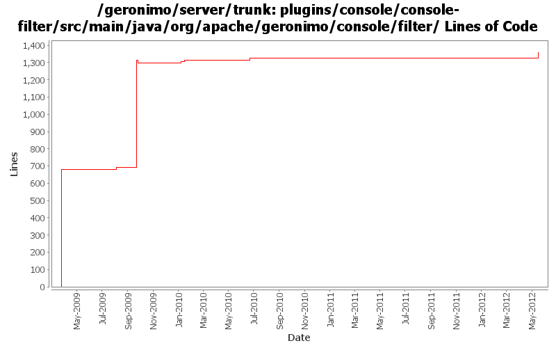

[root]/plugins/console/console-filter/src/main/java/org/apache/geronimo/console/filter

| Author | Changes | Lines of Code | Lines per Change |
|---|---|---|---|
| Totals | 27 (100.0%) | 1486 (100.0%) | 55.0 |
| xuhaihong | 14 (51.9%) | 685 (46.1%) | 48.9 |
| jbohn | 5 (18.5%) | 681 (45.8%) | 136.2 |
| xiaming | 2 (7.4%) | 58 (3.9%) | 29.0 |
| rwonly | 1 (3.7%) | 36 (2.4%) | 36.0 |
| genspring | 4 (14.8%) | 24 (1.6%) | 6.0 |
| rickmcguire | 1 (3.7%) | 2 (0.1%) | 2.0 |
Merge 1333350,1333352,1334031,1334300,GERONIMO-6345,GERONIMO-6348 into trunk
58 lines of code changed in 2 files:
GERONIMO-6058 Replace StringBuffer usage with StringBuilder
1 lines of code changed in 1 file:
GERONIMO-5407 XSSXSRFFilter error in G 3.0-M1 jetty build when trying to list plugins in admin console. jetty's request.getQueryString() will return a zero length string instead of null for a request like this "http://localhost:8080/console/xxx?"
3 lines of code changed in 1 file:
GERONIMO-5384 Geronimo console doesn't seem to handle % in sql statements right.
36 lines of code changed in 1 file:
GERONIMO-4994 use hash to keep the page to the latest page viewed after refresh.
9 lines of code changed in 1 file:
GERONIMO-4994 To support multiple level navigation tree in geronimo web console.
12 lines of code changed in 2 files:
GERONIMO-4987 Use ConcurrentHashMap instead of Collections.synchronizedMap(new HashMap())
Patch provided by Jack Cai.
2 lines of code changed in 1 file:
GERONIMO-4874 Remove tow unneeded source files
0 lines of code changed in 2 files:
GERONIMO-4874 Improve the console filter performance (Patch from Jack Cai)
666 lines of code changed in 7 files:
GERONIMO-4758 The Server Console page displays messy codes when set zh as the prefered language in browser(Patch from Siqi Du)
15 lines of code changed in 2 files:
GERONIMO-4641 XSSXSRFFilter cause some link failure (Patch from Rex Wang)
2 lines of code changed in 1 file:
GERONIMO-4609 Console could not display correctly on Chinese platform
1 lines of code changed in 1 file:
GERONIMO-4597 Validate Web Admin Console input - fixes for CVE-2008-5518, CVE-2009-0038, and CVE-2009-0039
681 lines of code changed in 5 files: